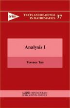

但凡每个上过小学，甚至没上过小学的人都知道这个简单而又朴实的等式：1+1=2 。但是，它又是如此朴实，以至于我们的数学教科书从未对此做过任何细致、深入的解释。当然，对于一个中学水平的学生来理解这个问题似乎有点困难，但是在本科以上的高等教育，尤其是对于理工科的学生(特别是数学系的学生)，如果仍然对这个问题没有一个彻底的答案，那么意味着我们的数学教育是多么的失败。因为数学不是少数天才独自的游戏，而应该是能够把道理给普通人讲明白，让普通人也能够理解，否则数学就只能在很小的范围内进行传播，而不能形成一股推动理论和技术进步的强大力量。换句话说，数学结论应该能够让广大的群众充分的相信它，接受它。这就要求数学结论严格符合逻辑，并且每一步都是能够讲给别人，并让对方理解的。如若不然，数学就仅仅存在于个人思维中的头脑风暴了，尽管有时候它们确实也是正确的。
在19世纪末，德国数学家 David Hilbert(希尔伯特) 提出了一个建议：把数学公理化，形式化，使之严格符合人脑的逻辑并经得起推敲。当时的出发点是为了解决诸如 Russell 悖论之类的数学悖论，从而建立稳固的数学根基。这一想法直接导致了现代数学成为了现在我们所看到的这个样子。到了20世纪初，意大利数学家 Peano 提出了一条公理: Peano 公理，用以定义自然数，自然数的算术运算法则(结合律，交换律，分配律等这些我们习以为常但却很少想过为什么是对的东西)，自然数的序 等重要的结论。在此之上，进一步定义整数，有理数，实数，并将这些算术法则向它们推广。这是一件很伟大的构想，并且 Peano 确实实现了这个构想。关于这个公理的具体内容，感兴趣的可以看看Terence Tao 所著的 Analysis(该书也有中译本：陶哲轩实分析)，其中对于这个问题做了透彻的分析和详尽的推导，同时让我们看到了这位数学天才严密的数学思维，可以说是国内任何一本数学书上都不能看到的。